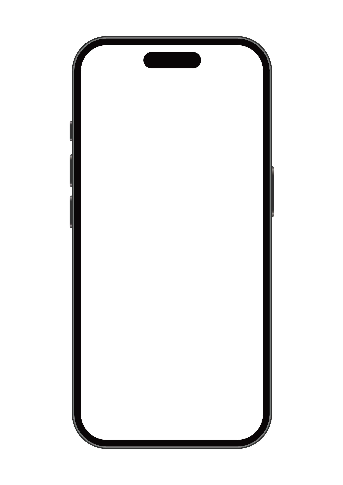
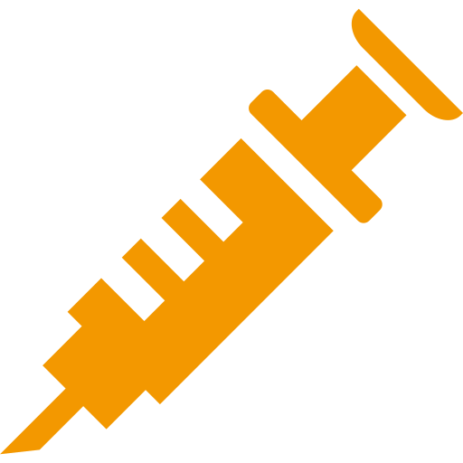
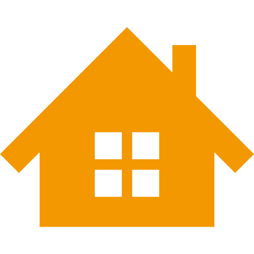

AI接続状況：確認中
※ 時間内の利用回数が無料枠の上限を超えた場合などは、自動的にルールベース応答に切り替わります
患者本人のスマホ近大 太郎さん（70代）

9:12
100
診察券
メッセージ 2
近畿大学病院
キンダイ タロウ
近大 太郎
診察券番号
000000000
AIコンシェルジュに話しかける
「薬を飲んだよ」「体調を話したい」
診察状況
らくらく会計
診察呼出状況

放射線検査
お薬状況
予約変更依頼
診療情報
あなたの一言
近大ラジオ

医療機関検索
今日のお薬
朝2種類飲んだ
昼1種類飲んだ
夜1種類
今の時間です
服薬の記録は会話から自動で集計／残り7日分
飲んだ
あとで
記録しました 9月23日（水）
14:10〜14:25 胸のどきどき
座っているときに急に／痛み・息苦しさなし
14:10〜14:25 胸のどきどき
座っているときに急に／痛み・息苦しさなし
強い痛みや息苦しさがあるときは、記録より先に連絡してください
病院に電話
119番
次の受診 10月1日（木）9:30 内科
前回（9月3日）から気になったこと
先生に聞きたいこと
＋ 聞きたいことを話して追加
診察で先生に見せる
（大きな文字で表示）
（大きな文字で表示）
AIが記録からまとめました。内容は直せます。
明日の受診
10月1日（木）9:30 内科
カバンに入れた（用意できた）
紙が見つからない → 写真を撮って保存
家族のスマホには、こう届きます
近畿大学病院
近大 太郎
2026/10/01 09:30
内科
［来院の案内（診察予約）］
明日は診察予約があります。予約時間に合わせてご来院ください。
明日の受付をしておく
当日は自動で受付します。家族にもお知らせします。
明日の流れ
1総合受付で保険証の確認
2採血
3内科の診察（まもなくコールでお知らせ）
見守り合っているご家族。選ぶとお互いの見守り状況を見られます。
見守り家族のスマホ長女（離れて暮らす）
10:05
90
招待が届いています
近大 太郎さん（お父さん）
近畿大学病院で本人の同意を確認済み
招待コードを入力
4
7
2
9
1
5
登録するとできること
予約の確認と、受付の代わり
まもなくコールや進み具合の確認
お薬の飲み忘れのお知らせ
持ち物の準備のお知らせ
体調の記録（本人が共有を選んだ場合）
登録する
家族：近大 太郎さん（お父さん）
今日の通院 10月1日（木）内科
持ち物
すべて用意できました
今週のお薬
飲み忘れ 1回
お父さんのアプリからのお知らせ
ひとことメッセージを送る
帰宅後に「今日のまとめ」が届きます